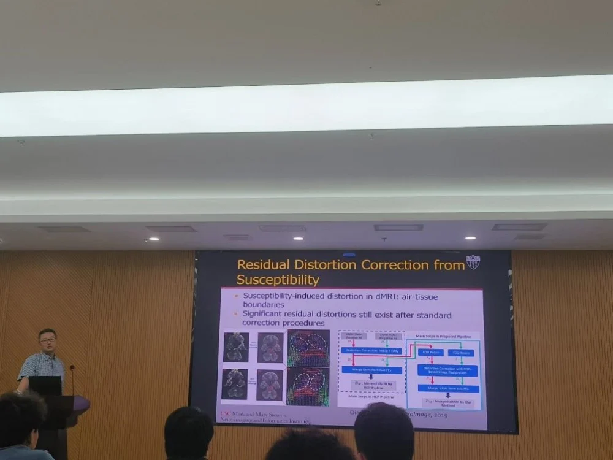
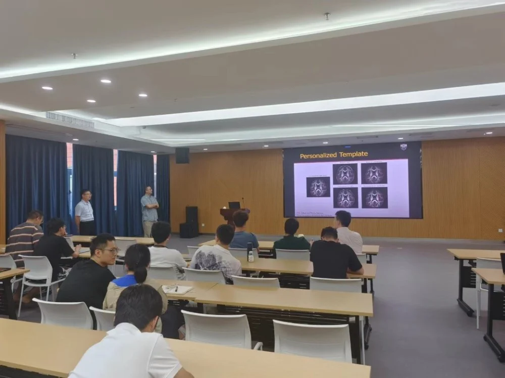
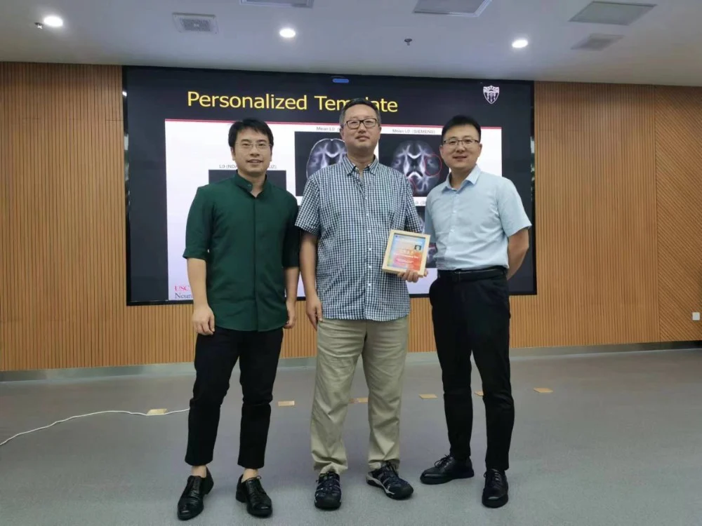

医学图像/眼科影像专题学术分享会----iMED六十讲
2023年7月22日，南加州大学神经图像计算研究团队负责人史永刚教授在4009会议室举行了一场关于DTI脑成像新型计算工具的演讲。张炯副研究员担任主持人，史教授详细介绍了他们的最新研究成果。
史永刚博士是南加州大学神经学、电子与计算机工程和生物医学工程副教授。他于2005年获得波士顿大学电气与计算机工程博士学位。2005-2009年在加州大学洛杉矶分校神经影像学实验室(LONI)接受神经影像学博士后培训。自2009年以来，他一直担任LONI的教员。目前，他领导着南加州大学史蒂文斯神经成像和信息学研究所的神经图像计算研究(NICR)小组。他的研究重点是开发用于脑成像研究的新型计算工具。他是多个NIH资助的R01项目的首席研究员，也是LONIR P41项目形状分析研究的项目负责人。

史教授首先介绍了基于多壳扩散MRI的纤维取向分布和隔室建模的新算法，这种算法采用球谐函数衡量纤维束分布，能更好地关注网格交叉结构。他还介绍了一种利用拓扑技术的神经束成像工具，该工具在重建具有挑战性的人类大脑通路中表现出色，尤其研究Tau蛋白在脑干蓝斑病理性聚集损伤神经造成认知功能性障碍的研究中，取得了重要的进展。
史教授还讨论了他们最近的研究，即基于表面的纤维算法在表面白质连通性方面的工作，这是一种解决神经纤维追踪问题的新方法。他们提出了一个新的插值方案，将FOD分解为两个易于插值的方向，然后分别对每个方向执行非线性插值，其中相邻体素间执行十次插值，最后拼接，从而实现了较为准确的神经纤维束追踪。
此外，史教授还介绍了他们在考虑个体差异的DTI成像调和方法的最新研究。他们首先将不同设备获取的数据配准到同一空间，然后将某体素点与每一个被试者的同一位置像素点做相似度比较并作为权重加权到不同像素位置，从而解决了由于个体生理差异因素导致的问题。随后史老师介绍了针对传统方案中特征未对齐问题导致的大脑空腔磁场扭曲的相关研究工作。最后，史教授展示了一些用于视觉和大脑老化研究的跟踪连接体成像项目。

会议结束后，听会人员积极提问。首先，郝晋奎博士提出了如何评估神经束纤维重建效果的问题。史教授解释称，目前该领域还没有统一的评价方式，需要不断探索。接着，马煜辉博士后提问了有关不同模态调和过程中模板选择的问题。史教授对于模板选择问题进行了解答，指出目前学术界使用的模板被广泛认可为一种标准，方便不同研究成果之间的比较。然而，对于不同算法来说，该模板并非一定是最优选择。最后，张炯老师询问了有关DTI神经纤维束成像技术在临床中的实际应用情况。史教授回答时指出，由于DTI技术本身成像较为复杂，围绕DTI的相关技术仍不成熟，许多地方仍需改进，因此该技术在临床中的应用较少。
通过本次讲座，同学们对DTI脑连接成像技术的重要性和潜力有了更加深入的了解。iMED将会继续将工程技术与医学相结合，为未来的医学诊断和治疗提供新思路和新方法。
